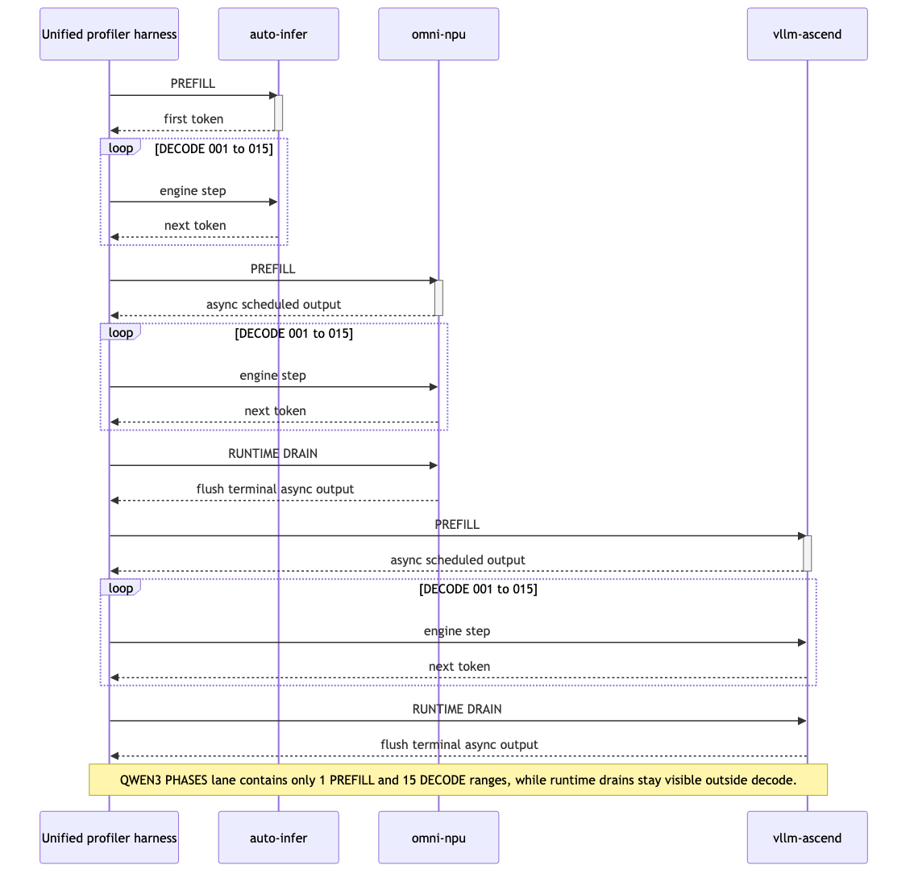
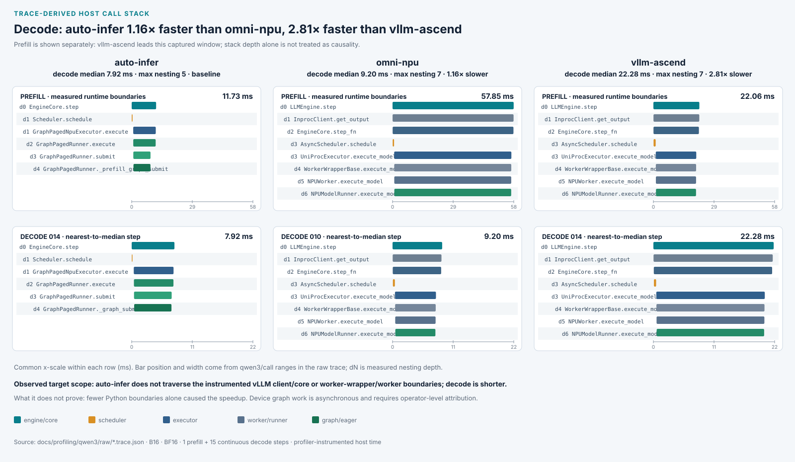
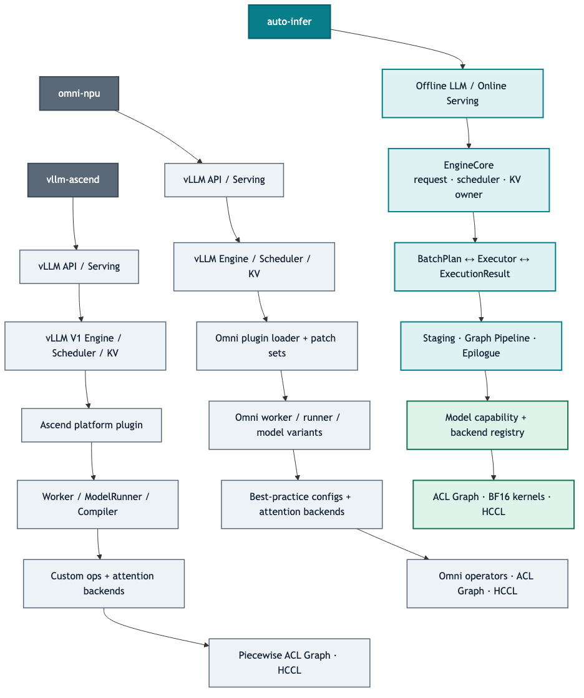

对 omni-npu 为 1.23×，对 vllm-ascend 为 2.72×。auto-infer 与 vllm-ascend 的 128-token digest 一致。
- Warm TTFT：6.137 ms
- TPOT：5.672 ms
- Throughput CV：1.348%
本报告把管理决策、matched benchmark、三框架原始 Chrome Trace 与源码架构放在同一条证据链上。结论严格限定在已实现、已测量的推理核心，不把模型覆盖广度误写成架构质量，也不把 profiler 时间冒充生产吞吐。
在 Qwen3-0.6B、单张 Ascend 910B1、bfloat16 greedy、等 14,464 KV tokens 的验收边界内，auto-infer 的稳态延迟、吞吐、启动与稳定性均为本次第一。内存是明确代价：peak torch allocation 为 5.24 GiB，高于 vllm-ascend 的 2.80 GiB，但低于 omni-npu 的 9.73 GiB。
对 omni-npu 为 1.23×，对 vllm-ascend 为 2.72×。auto-infer 与 vllm-ascend 的 128-token digest 一致。
Qwen3-0.6B；bfloat16；greedy / ignore-EOS；B1 latency；B16 throughput；128 output tokens；1 次 warm-up；20 次 measurement；每框架 14,464 usable KV tokens。以下 headline 只来自无 profiler 原始 JSON。
| 指标 | auto-infer | omni-npu 0.14 | vllm-ascend 0.20.2 |
|---|---|---|---|
| Warm TTFT越低越好 | 6.137 ms | 55.105 ms | 18.344 ms |
| TPOT越低越好 | 5.672 ms | 6.710 ms | 17.405 ms |
| B16 throughput越高越好 | 2,380.4 tok/s | 1,930.2 tok/s | 874.4 tok/s |
| Engine load + graph越低越好 | 8.435 s | 34.907 s | 44.858 s |
| Peak torch allocation越低越好 | 5.239 GiB | 9.731 GiB | 2.797 GiB |
| Throughput CV越低越好 | 1.348 % | 1.702 % | 1.813 % |
d23029216ed08f2c。omni-npu 输出长度同为 128，但 digest 为 f49de48270cac23f，因此该对只做性能可比，不声明 token identity。headline 使用 current schema，cold TTFT 来自构造完成后的首个真实请求。每份 trace 捕获同一 B16、16-token generate：1 次 prefill + 15 次连续 decode。这是连续多步 decode，不是投机 MTP。三方均记录到 448 次 fused-attention host 调用，与 28 层 × 16 次 forward 相符。
prefill-graph=1、eager=0、online capture=0，否则拒绝发布 trace。QWEN3 PHASES process，唯一的 PREFILL 后面依次是 DECODE 001…DECODE 015。这是采集器对三套 engine step 写入的统一 host range；三方原生 operator、线程和 category 会保留，因此 JSON 结构和事件数不会相同。
| 类别 | 事件数 | 累计事件时间 | 事件时间占比 |
|---|---|---|---|
| Attention / KV | 2,240 | 77.16 ms | 9.2% |
| Communication / memory | 1,164 | 9.96 ms | 1.2% |
| Graph replay / launch | 0 | 0.00 ms | 0.0% |
| LM head / sampling | 32 | 0.46 ms | 0.1% |
| Projection / MLP / Norm | 4,064 | 40.41 ms | 4.8% |
| Runtime / scheduling | 1,035 | 404.37 ms | 48.4% |
| Unclassified | 45,266 | 302.74 ms | 36.3% |
| 事件 | 次数 | 累计时间 |
|---|---|---|
qwen3/profiled_request | 1 | 131.52 ms |
auto-infer | 1 | 131.40 ms |
qwen3/prefill_and_decode | 1 | 131.35 ms |
NOTIFY_WAIT | 16 | 109.24 ms |
Computing | 12,817 | 91.55 ms |
Free | 12,818 | 37.42 ms |
npu::npu_fused_infer_attention_score_v2 | 448 | 34.69 ms |
FusedInferAttentionScore | 448 | 18.78 ms |
SHA-2561bff59c92323b26b2ae7da442d29027a560c1853a2001ce5f53a2ac264e119fa
| 类别 | 事件数 | 累计事件时间 | 事件时间占比 |
|---|---|---|---|
| Attention / KV | 2,856 | 80.30 ms | 6.9% |
| Communication / memory | 1,313 | 8.78 ms | 0.8% |
| Graph replay / launch | 0 | 0.00 ms | 0.0% |
| LM head / sampling | 112 | 3.88 ms | 0.3% |
| Projection / MLP / Norm | 5,268 | 71.41 ms | 6.1% |
| Runtime / scheduling | 1,907 | 629.65 ms | 54.2% |
| Unclassified | 29,845 | 368.21 ms | 31.7% |
| 事件 | 次数 | 累计时间 |
|---|---|---|
qwen3/profiled_request | 1 | 204.32 ms |
omni-npu | 1 | 204.24 ms |
qwen3/prefill_and_decode | 1 | 204.20 ms |
Free | 8,304 | 119.68 ms |
NOTIFY_WAIT | 15 | 87.38 ms |
Computing | 8,303 | 77.77 ms |
npu::npu_fused_infer_attention_score_v2 | 448 | 27.06 ms |
EVENT_WAIT | 436 | 22.31 ms |
SHA-2562c36a2e2f55cd7b4f112de22eea83a15477bfa4e673d7d7d6bd7fc843067e1a7
| 类别 | 事件数 | 累计事件时间 | 事件时间占比 |
|---|---|---|---|
| Attention / KV | 3,136 | 319.90 ms | 15.7% |
| Communication / memory | 2,063 | 47.95 ms | 2.4% |
| Graph replay / launch | 0 | 0.00 ms | 0.0% |
| LM head / sampling | 113 | 2.15 ms | 0.1% |
| Projection / MLP / Norm | 3,696 | 39.21 ms | 1.9% |
| Runtime / scheduling | 3,909 | 1,142.46 ms | 56.2% |
| Unclassified | 25,921 | 482.16 ms | 23.7% |
| 事件 | 次数 | 累计时间 |
|---|---|---|
qwen3/profiled_request | 1 | 363.56 ms |
vllm-ascend | 1 | 363.46 ms |
qwen3/prefill_and_decode | 1 | 363.41 ms |
Free | 4,921 | 286.54 ms |
vllm::unified_attention_with_output | 448 | 205.82 ms |
Computing | 4,920 | 68.63 ms |
npu::npu_fused_infer_attention_score | 448 | 47.56 ms |
aten::copy_ | 1,186 | 45.52 ms |
SHA-256808c99f6410647485bec89933cb02de670203725de01ea43dcadd8febede6fa4
本次 16-token profile digest 三方一致；这不改变 128-token headline 中 omni-npu digest 不同的事实。打开方式：在 Chromium 输入 chrome://tracing，选择 Load 后载入任一 JSON；文件本身未压缩、未截断。
下图不再从源码箭头推演：每个 bar 都来自运行时对象上实际被调用的 qwen3/call profiler range。Prefill 与 15 个 decode 分开，decode 图选择最接近中位数的实际 step，不挑最优样本。

QWEN3 CALL STACK process。d0…dN 是实测嵌套深度；原生 CPU/NPU event 仍保留在原 process，专用 lane 只复制已测 range 以便阅读。| 框架 | PREFILL | 15-step decode 中位数 | 最大嵌套 | Trace 实测边界（中位 step） |
|---|---|---|---|---|
| auto-infer | 11.73 ms (baseline) | 7.92 ms (baseline) | 5 | d0 EngineCore.step · d1 Scheduler.schedule · d1 GraphPagedNpuExecutor.execute · d2 GraphPagedRunner.execute · d3 GraphPagedRunner.submit · d4 GraphPagedRunner._graph_submit |
| omni-npu | 57.85 ms (4.93× slower than auto-infer) | 9.20 ms (1.16× slower than auto-infer) | 7 | d0 LLMEngine.step · d1 InprocClient.get_output · d2 EngineCore.step_fn · d3 AsyncScheduler.schedule · d3 UniProcExecutor.execute_model · d4 WorkerWrapperBase.execute_model · d5 NPUWorker.execute_model · d6 NPUModelRunner.execute_model |
| vllm-ascend | 22.06 ms (1.88× slower than auto-infer) | 22.28 ms (2.81× slower than auto-infer) | 7 | d0 LLMEngine.step · d1 InprocClient.get_output · d2 EngineCore.step_fn · d3 AsyncScheduler.schedule · d3 UniProcExecutor.execute_model · d4 WorkerWrapperBase.execute_model · d5 NPUWorker.execute_model · d6 NPUModelRunner.execute_model |
因果边界：trace 证明本次 auto-infer 的 prefill 与 decode host range 都更短，且 prefill 实际经过 GraphPagedRunner._prefill_graph_submit；这不等于证明所有未插桩函数都不存在，也不能只凭“层数更少”断言全部加速因果。record_function 对每个边界也有小幅且不同数量的扰动，因此排名仍以无 profiler headline 为准。
性能解释必须区分事实与因果推断。下面把每条机制连到测试结果与源码边界；没有单变量 ablation 的地方不会写成已证明因果。
| 证据类型 | 环节 | 结论 | 依据 / 限制 |
|---|---|---|---|
| 实测 | B16 throughput | 2,380.4 tok/s；较 omni-npu 1.23×，较 vllm-ascend 2.72×。 | headline benchmark JSON |
| 源码观察 | Graph hot path | graph capture、staging、replay/update、epilogue 拆成可独立测试组件；热路径不做在线 capture。 | graph_decode_runner / graph_task_pipeline |
| 因果推断 | Replay + metadata pipeline | replay 后 side-stream 更新、event 排序和双缓冲减少 graph-task update 对下一步的阻塞。 | 与低 TPOT 及短 profiled request 一致；未做单变量 ablation |
| 源码观察 | Persistent staging | CPU/NPU 输入缓冲持久化，block table 仅上传 dirty row/span。 | staging / input stagers |
| 因果推断 | 较少 host/device 胶水 | 固定地址与脏更新降低逐步分配、拷贝和 Python 调度成本。 | trace 中 auto-infer request range 最短 |
| 源码观察 | Packed projections | QKV 与 gate/up 使用 packed weight；BF16 lm_head 与 greedy argmax 留在 captured epilogue。 | packed projections / decode epilogue |
| 因果推断 | 更少 kernel 与同步边界 | projection packing 与直接 argmax 降低 launch 数；收益随模型/shape 变化，必须重做 profiling。 | 机制合理但不能由相关性证明全部增益 |
| 实测 | Profiler window | B16 16-token 请求范围约 131.5 / 204.3 / 363.6 ms（auto / omni / vllm）。 | 三份 raw Chrome Trace |
| 实测 | Startup | 8.435 s vs 34.907 s vs 44.858 s；auto-infer 与 vllm-ascend 都覆盖到 256-token graph family，Omni 覆盖到 512；启动差距不能只归因于 gear 数。 | headline benchmark + captured framework configuration logs |
auto-infer 的核心优势是低间接性、明确所有权和小扩展 seam；两个对手的优势是产品宽度与成熟生态。代码行数只表示审计面，不单独构成质量结论。

| 维度 | auto-infer | omni-npu | vllm-ascend |
|---|---|---|---|
| 核心控制流 | EngineCore → BatchPlan → Executor → ExecutionResult；协议短且状态归属明确。 | vLLM 主流程之上叠加环境选择的 patch 与额外配置。 | 复用成熟 vLLM engine，Ascend worker / runner / compiler 专化。 |
| 模型扩展 seam | 模型声明 attention / MTP capability；registry 注入对象，engine 不按模型分支。 | 模型实现、best-practice config 与 patches 共同决定路径。 | 覆盖广，但模型与平台 runner 的组合触点更多。 |
| 状态所有权 | Engine/service 单线程拥有 request、scheduler、KV、completion；跨线程传不可变视图。 | 上游 vLLM 状态与 patch 后行为共同形成所有权边界。 | 继承 vLLM 的多组件生命周期，成熟但阅读跨度更大。 |
| Graph 生命周期 | 启动期捕获；固定地址 staging；replay 后独立 stream metadata update；event + 双缓冲。 | NpuGraphEx + full/piecewise graph，依赖插件配置与 graph gear。 | torch.compile + ACL graph piecewise；支持较宽的通用 shape 集合。 |
| 输入与 KV metadata | 持久 pinned CPU/NPU buffer；block table 只传 dirty rows/span。 | 由 Omni runner 与 patched vLLM metadata 路径管理。 | 通用 input batch 和 worker metadata 路径，支持面广。 |
| Projection / epilogue | packed QKV、gate/up；BF16 captured lm_head + greedy argmax；避免外部 sampler step。 | 拥有广泛融合算子与模型专用优化配置。 | 平台 custom op、compiler fusion 与通用 sampler 体系。 |
| Continuous batching | scheduler/KV 生命周期有专项回归；同步路径是本负载已验证默认。 | 继承 vLLM scheduling，并通过 patch 增补行为。 | vLLM V1 scheduler 成熟，线上生态更完整。 |
| Serving | 单 service + broker + request-id demux；在线/离线共用核心执行协议。 | 成熟 vLLM serving，Omni patch OpenAI 与 scheduler 层。 | API、工具链、部署经验最成熟。 |
| Distributed / MoE | 命名 TP/DP/EP/CP/SP mesh；BF16 true all-to-all 接口与测试；深度仍有限。 | 并行与算子调优面最丰富，是明显强项。 | 上游并行体系成熟，Ascend 通信优化覆盖更广。 |
| MTP | 一个 two-stage recurrent graph path；geometry 从权重推导；unsupported fail-fast。 | Eagle / MTP patches 与模型优化覆盖更广。 | 上游 speculative decoding 生态更完整。 |
| P/D 与 MLA MTP | 仅保留未接线 P/D 低层接口；MLA MTP capability 保留但明确 unsupported。 | P/D、connector 与 MLA/MoE 产品能力更完整。 | connector / disaggregation 生态成熟。 |
| 维护与审计面 | 9,960 Python LOC / 93 files；无内部 import cycle；路径较短。 | 61,080 / 223；patch 提升适配力，也增加组合状态。 | 53,219 / 242；生态收益大，平台 runner 体量更高。 |
这条边界决定框架会继续收敛，还是重新滑向模型特判。左侧是版本化架构契约；右侧必须绑定 model/config/weights digest、软件版本和硬件版本。
精度先于性能。任何阶段失败都不进入下一阶段排名；性能 profiling 只能解释一个已通过精度门的实现。
HTML、归一化 JSON 与 raw trace 都可独立审计。相对指标从 JSON 重新计算，trace 链接与 SHA-256 一一对应。
| 框架 | 原始文件 | events | 大小 | SHA-256 | torch / torch-npu / vLLM |
|---|---|---|---|---|---|
| auto-infer | raw/auto-infer.trace.json | 70,882 | 11.3 MiB | 1bff59c92323b26b2ae7da442d29027a560c1853a2001ce5f53a2ac264e119fa | 2.10.0+cpu / 2.10.0 / 0.20.2+empty |
| omni-npu | raw/omni-npu.trace.json | 60,039 | 9.2 MiB | 2c36a2e2f55cd7b4f112de22eea83a15477bfa4e673d7d7d6bd7fc843067e1a7 | 2.9.0+cpu / 2.9.0 / 0.14.0+empty |
| vllm-ascend | raw/vllm-ascend.trace.json | 55,663 | 8.4 MiB | 808c99f6410647485bec89933cb02de670203725de01ea43dcadd8febede6fa4 | 2.10.0+cpu / 2.10.0 / 0.20.2+empty |
主测试原始 JSON 保留于 npu2 的 /data2/auto-infer-qwen3-prefill-fix-20260723/results/headline/；其完整内容已嵌入 summary。capture harness revision 与三个 framework source revision 分开记录，避免把采集脚本版本误当成外部框架版本。
python tools/analyze_qwen3_profiles.py --metadata AUTO_META OMNI_META VLLM_META --benchmarks AUTO_JSON OMNI_JSON VLLM_JSON --output-dir docs/profiling/qwen3 --capture-provenance docs/profiling/qwen3/provenance.json --benchmark-schema current python tools/build_qwen3_architecture_report.py pytest -q